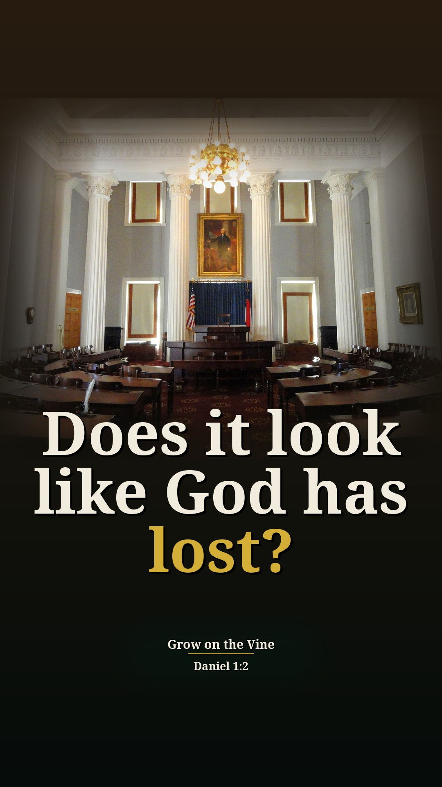
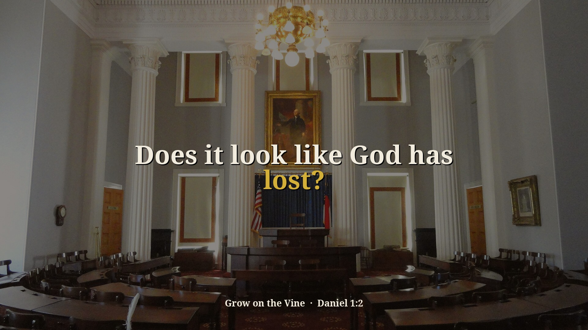

War of the Wise Part 1 (Daniel 2) — 2 new context Shorts (preview)
Preview only, not posted anywhere. Source: M0PKQYTTstU · Pastor David G. Kincer. New Shorts from passages on sin and other religions that were skipped before. Each one includes the earlier or surrounding part of the sermon that explains why he says it. Each card follows the clip-page order: video → short answer → his words → Scripture (NKJV) → full message.
Can astrologers tell your future?
Context included: 3:16–4:02 Nebuchadnezzar's forgotten dream and his order to the magicians, astrologers and sorcerers (Daniel 2:2) is why he explains what each of them does, then and today.
Watch the clip
Our short summary of this clip, not the preacher's exact words
Short answer: No. He says the king called the magicians, astrologers, sorcerers and Chaldeans and none could tell his dream. Astrologers read the stars and zodiac, as people do today; necromancers talk with spirits of the dead; sorcerers and witchcraft cast spells, and some are demonically influenced.
Why: Daniel 2:2, 10–11: the king's wise men admitted no man on earth could tell the dream.
“But he orders all the magicians, the astrologers, the sorcerers, and the Chaldeans.”
▶ 3:27
“The positions of the planet in relation to the zodiac and people do that today.”
▶ 4:21
“Necromancers, magicians, they talk with the spirits of the dead to get future information and predictions.”
▶ 4:26
“The sorcerers, the witchcraft people, they cast spells and use enchantments and some of them can be demonic.”
▶ 4:36
Daniel 2:2 Then the king gave the command to call the magicians, the astrologers, the sorcerers, and the Chaldeans to tell the king his dreams. So they came and stood before the king.
Daniel 2:10-11 The Chaldeans answered the king, and said, “There is not a man on earth who can tell the king’s matter; therefore no king, lord, or ruler has ever asked such things of any magician, astrologer, or Chaldean. It is a difficult thing that the king requests, and there is no other who can tell it to the king except the gods, whose dwelling is not with flesh.”
Full sermon: War of the Wise Part 1 (Daniel 2) — full message page
Other title options:
- Who could tell the king his dream?
- Is the occult real?
YouTube description (draft)
Can astrologers tell your future? Read the short answer, the Scripture (NKJV) and the pastor's own words: https://growonthevine.com/clips/can-astrologers-tell-your-future/ To see the full message, click here: https://www.youtube.com/watch?v=M0PKQYTTstU&t=195s No. He says the king called the magicians, astrologers, sorcerers and Chaldeans and none could tell his dream. Astrologers read the stars and zodiac, as people do today; necromancers talk with spirits of the dead; sorcerers and witchcraft cast spells, and some are demonically influenced. Daniel 2:2 (NKJV) Pastor David G. Kincer · Grow on the Vine Music: "Sapphire Isle" Kevin MacLeod (incompetech.com) Licensed under Creative Commons: By Attribution 4.0 License http://creativecommons.org/licenses/by/4.0/ #Shorts #Bible #Jesus
Does it look like God has lost?
Context included: 0:15–1:28 God's people had lost everything and it looked like God had no power, which sets up why Israel went into captivity (sin) and why he compares it to America today.
Watch the clip
Our short summary of this clip, not the preacher's exact words
Short answer: He says Israel went into captivity because most of them were sinning and disobeying God, and God said He'd correct His people and confront unbelievers. In America it looks like the church is losing the war of righteousness, with Jesus mocked by comedians, atheists and actors, but watching what God did in Daniel shows what He can do for America.
Why: Daniel 1:2: the Lord gave Judah into Babylon's hand, His correction for sin.
“But God said that he would correct his people for sinning and Israel went into captivity because most of them, the majority, were sinning, disobeying God, violating scripture.”
▶ 1:40
“It looks as though the church in America is losing the war of righteousness.”
▶ 2:11
“Jesus is being put down and desecrated all the time and comedian by comedians and atheists and actors”
▶ 2:21
“we will know what God can do in the future of America.”
▶ 2:46
Daniel 1:2 And the Lord gave Jehoiakim king of Judah into his hand, with some of the articles of the house of God, which he carried into the land of Shinar to the house of his god; and he brought the articles into the treasure house of his god.
Full sermon: War of the Wise Part 1 (Daniel 2) — full message page


Other title options:
- Why did Israel go into captivity?
- What can God do for America?
YouTube description (draft)
Does it look like God has lost? Read the short answer, the Scripture (NKJV) and the pastor's own words: https://growonthevine.com/clips/does-it-pay-to-serve-god/ To see the full message, click here: https://www.youtube.com/watch?v=M0PKQYTTstU&t=99s He says Israel went into captivity because most of them were sinning and disobeying God, and God said He'd correct His people and confront unbelievers. In America it looks like the church is losing the war of righteousness, with Jesus mocked by comedians, atheists and actors, but watching what God did in Daniel shows what He can do for America. Daniel 1:2 (NKJV) Pastor David G. Kincer · Grow on the Vine Music: "Windswept" Kevin MacLeod (incompetech.com) Licensed under Creative Commons: By Attribution 4.0 License http://creativecommons.org/licenses/by/4.0/ #Shorts #Bible #Jesus